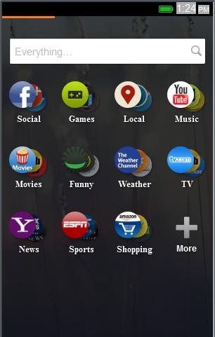
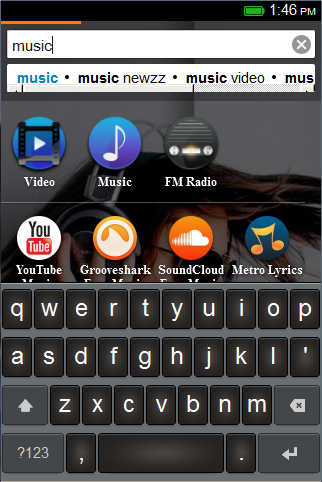
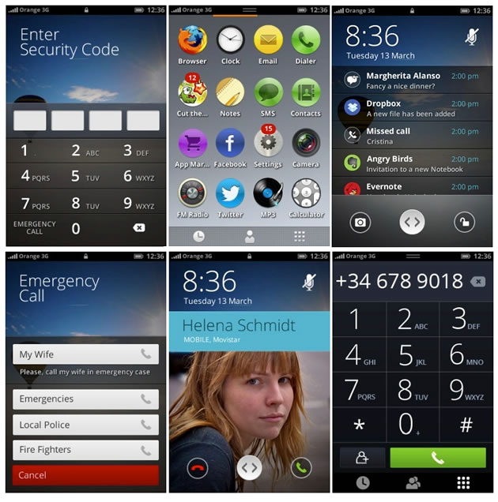

Answer:Firefox OS's Adaptive search

- Its Unique !
- Lets see how it works !
Swipe to the right to open the search screen.
Search for what you need.

Tap what you see that is interesting to you.

- Search in London will be different than search in Bangalore
- Very affordable hardware


Thanks Codepo8